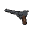
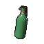
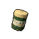

Every screen, as built
Low-fidelity models of LAAF's current interface, rebuilt on the game's own 640×360 base canvas with its real fonts, palette and icon set. Each screen has numbered notes on what it shows and why.
Every mockup uses the same coordinates as the game: base pixels on a 640×360 canvas, scaled up to fit. The town behind the menus is shown as a flat fog plate, standing in for the live 3D scene.
Title screen
The first thing the player sees. The live town plays staged story scenes in the fog behind the logo.
- Logo. IM Fell English, 52px × 1.35 × 1.12, tracked +16, with a 1.2px Rust Hi rule under it. HOLLOWMERE in Label Wide.
- PRESS ANY KEY. The large keycap pill (19px tall) breathing between 55% and 100% at 2.6 rad/s. Any key, button or click opens the dossier.
- Scene caption. The italic line over the fog (Caption Bone) and its source in Barlow 7. A new scene every 11 s, with fades.
- Letterbox and CRT. 18px black bars. Scanlines, grain, a vignette and a slight colour fringe pass over everything, the UI included.
Dossier · Continue
The default page once the folder opens. It presents the newest save as a case file, so the player can resume with a single Enter.
Talk to Grady at the General Store
- Index tabs. Seven drawn tabs tucked behind the folder. The open one pulls 4px further out, takes the folder's own gradient and lights its icon amber.
- Map print. A tilted photo of the town map, pinned where the save was made, with the place handwritten at the foot.
- Facts as chips. Play time, difficulty and the Mark. The Mark chip is the only rust-tinted chip, so danger reads at a glance.
- Weapons carried. One cell each; the one in hand is brighter. Guns show loaded·reserve rounds.
- NEXT panel. The save's objective on an amber 8% panel, because amber marks what is live.
- RESUME, the one rust bar. Drawn icon, tracked caps and an ENTER keycap. It is armed (brighter top) because Enter fires it from the tabs.
- Help bar. The keys that work right now, right-aligned in the bottom letterbox. Every pair is clickable too.
Dossier · New
Choose a difficulty and see what it changes before committing.
- Heading and lede. The page speaks in the world's voice (IM Fell) before it asks for anything.
- Difficulty rows. 1–3 flames make the level readable without words. The chosen row gets amber flames and the 1px amber focus outline.
- Live meters. Damage taken, enemy health and ammo found redraw as the selection moves. Fixed values use Bone 70%, not amber, because they are information, not a setting.
Dossier · Load
Every save, newest first, so the right one can be recognised at a glance.
- Map thumbnail. A 36×24 crop of the town map with a Rust Hi dot where the save was made. Older saves show the chapter numeral instead.
- Title line. Chapter and objective in Barlow Bold 8, cut to fit with an ellipsis.
- Meta line. Save kind · difficulty · play time · date, in Muted Label 7. Six rows show at once; the list scrolls with the selection, and a "n more below" line appears when needed.
Dossier · Extra
Achievements, kept across every run.
- Progress track. A 3.5px pill filled amber to the share earned. The count sits in the heading.
- Rings. Earned: an amber ring and the achievement's icon. Locked: a faint ring and a lock. The focused one gets an outer ring (Bone 90% as built; DESIGN.md lists this as drift from the Lantern Rule).
- Detail. The name (or "Locked") and the condition, so locked goals still tell the player what to try.
Dossier · Options
One settings page, shared by the main menu and the pause menu. Every change applies immediately.
- Group headers. GENERAL, AUDIO, SUBTITLES, CONTROLS, GAMEPLAY & ACCESSIBILITY, VIDEO in Muted Label Caps. 29 settings in all.
- Choice. The value sits between two drawn chevrons, which turn amber on the focused row. A/D, Enter or a click steps it.
- Meter with knob. A 56px track filled amber, with a knob that grows when focused. Click or drag the track, or use the wheel. Multipliers and brightness get a tick at the designed value.
- Scroll thumb. A thin Bone track in the folder's right margin shows where the 12 visible lines sit in the list.
Dossier · Dev
For testing: jump to any step of any chapter. Nothing is saved and nothing unlocks.
- Run modifiers. Start with all 12 evidence, or with the Mark at 30 / 60 / 95%.
- Steps. Every mission step of the three chapters (I · Intro … III · Epilogue). The help line at the foot explains the selected row.
Dossier · Quit
A confirmation that reassures: the player's saves are kept.
- In-world copy. "Check out of room six" keeps the fiction while stating the fact: saves stay.
- Where you'd leave off. The same map print as Continue, tilted the other way.
- One action. QUIT TO DESKTOP. Esc goes back to the tabs.
Pause menu
The dossier set down over the frozen game. The frame behind it is blurred and dimmed.
Follow the forest trail to the sawmill
- Frozen backdrop. The paused frame, blurred and dimmed (
pause_blur.gdshader), under the same letterbox, logo and CRT pass as the main menu: one world. - State at a glance. The chapter, then chips for time, difficulty and the exact Mark (to a tenth: the only place it is shown exactly), then the NEXT objective.
- Three rows. Save game, Options, Main menu, each with an icon and a line that says what it does. When saving isn't allowed, Save game becomes a fainter slip with a lock and the reason.
- RESUME. The default selection. Esc also resumes. It fires on the button's release, so the click never reaches the gun.
Pause · Leave this run?
- Consequence first. The lede states what will be lost before the player confirms.
- Leaf turn, not a modal. The confirmation is its own page of the dossier (a 0.18 s leaf turn). Esc turns back.
Inventory · Weapons
I opens it (Back on a pad). It is the pause dossier, wider, with five index tabs.

Six rounds. Steady, and loud enough to bring them running.
- Index tabs. WEAPONS, ITEMS, KEYS, EVIDENCE, MAP. Q/E, LB/RB or a click changes tab. M opens straight on MAP.
- List. 45% of the page. Each row has the item's rendered icon (made from its 3D model in the PS2 look), its name and a sub line.
- Detail card. A big icon, the name in the serif, chips, what it is. Read live from the game, so it's always right.
- Action bar. The verb Enter will do: EQUIP, DRINK, PUT ON… When it can't, a fainter slip says why ("In hand.").
Inventory · Evidence
Hidden under the static on channel 7: "He's lying to us."
- Slips. A 6×2 grid of the twelve pieces, each with its rendered icon. Missing ones show as ???, never hidden, so the player knows how many remain.
- Focus. The same amber outline as every list row in the game.
- Detail. The number in amber caps, the name in the serif, then what it says. The footer hints at why collecting matters (the Signal ending).
Inventory · Map
Talk to Grady at the General Store · 84 m away
- Alex. A rust arrow pointing where Alex faces, on the town printed on paper (
guide.gd draw_paper_map). - Objective. An amber ring, the same colour as the objective on the minimap and compass.
- NEXT and distance. One line: what to do and how far it is.
In-game HUD
Four things always on screen; everything else enters on its event and leaves after. Glance, don't read.

×2G
×1H- Objective (always). Amber edge and OBJECTIVE caps. Its panel fades after 6 s, leaving shadowed text. Toasts stack under it, sliding in 14px from the left.
- Compass. Cardinal points, with the objective as an amber diamond.
- Minimap and clock (always). A round paper map that turns with Alex, the objective in amber, and the in-game clock under it.
- Health and stamina (always). A heart and a 5px pill with a pale trail that drains after a hit; the heart beats under 30%. Stamina shows only while spent and turns Rust Hi when exhausted.
- Weapon card (always). Rendered icon, name, amber magazine pips,
loaded / reserve. A 2px edge in the weapon's colour; an amber flare on a swap. - Item belt. A chip for each throwable or tea carried, with the count and its quick key.
- Prompt. Key plus verb, only near something usable.
- Subtitle. The speaker's name in their colour and the line on an adjustable backing. The name means colour is never the only cue.
- Mark notice. MARK +N% in Rust Hi under the clock when it rises; it fades. No permanent gauge.
- Visibility eye. How visible Alex is, for stealth. Can be turned off.
Selection wheel
Hold Tab. Time slows to 25% and the world goes grey, so the choice is made under pressure but not in a panic.
- Ring of wedges. Fists at the top, then each weapon clockwise in number-key order, a faint rule, then the items Alex holds. Icon on a Bone 7% disc, count under it (
loaded / reserve, ×n, On/Off, or EMPTY in Rust Hi). - Picked wedge. Stands out 8px, warmer, with the amber focus outline. The weapon in hand carries an amber dot.
- Hub. The verb in amber caps, the name in IM Fell, the quick key, and an amber needle on the rim where the pointer aims.
- Explanation line. What the item does (Bone) or why it can't be used (Rust Hi), then the help pair for the device in use.
Minigame overlay · Radio tuning
Each minigame is a drawn object over a dimmed world, with its instruction under it and Esc to leave. Shown: radio tuning, the first and mandatory one.
- Dial window. A lit amber scale with a rust needle that the player moves with A/D, the mouse or a stick.
- Waveform. The signal (green) against the target shape (dashed). It cleans up as the dial nears the station.
- Status. "HOLD STEADY" and dots that count up while the signal is held clean.
- Instruction and exit. One line of controls under the object, and Esc to leave at any time without other penalty.
| Overlay | Object drawn | Controls | Feedback |
|---|---|---|---|
| Lockpicking | A pin-tumbler lock in cross-section | A/D, mouse or stick rotate the pick; W, click or A lifts | The pin trembles near the sweet spot; tension builds and can break the pick |
| Fishing | The dock at dawn, bobber and line | Hold to charge the cast, press on the bite, hold to reel | A tension bar: keep the marker in the green or the line snaps |
| Lantern Hi-Lo | A card table against Silas | Pick a stake, then Higher or Lower; cash out | Chain multiplier ×1.5 / ×2 / ×3, HAND n/10, the Veil card |
| Moth Run | An arcade cabinet screen | W/S, stick or mouse steer | Score, 3 lives, the high-score table, Elena's message at 10,000 |
| Shooting gallery | In the world: 5 tin moths on the square's bar | Aim and fire | Each moth swings up when hit |